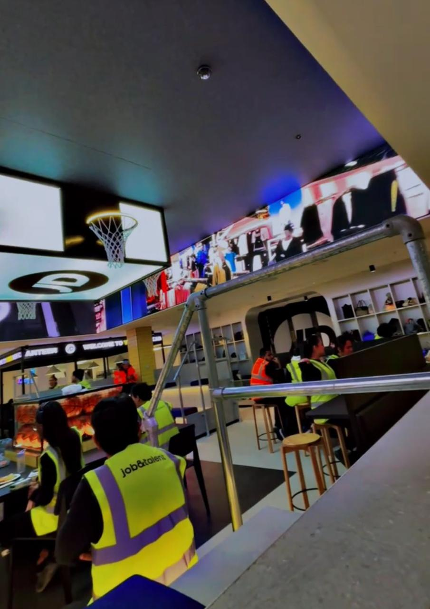
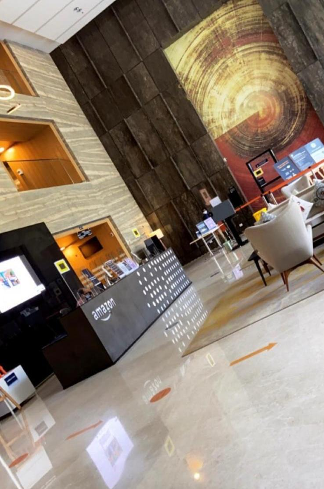

About Me
I am an aspiring project manager who values both introspection and ambition. My career goals center on leading impactful projects,
fostering collaboration, and delivering results that make a tangible difference.
I thrive in environments where strategic thinking, clear communication, and creative problem-solving
are key-skills, which I believe it align seamlessly with the demands of project management.
While stability
and security are important to me, I also embrace new challenges, continually seeking opportunities to learn,
grow, and contribute meaningfully.
Outside of work, I find joy in quiet moments of reflection and creativity. I cherish my time with
close friends and family but equally appreciate solitude, using it to recharge and gain fresh
perspectives. My admiration for cats, particularly their blend of independence and genuine
warmth, mirrors my own approach to relationship-building and problem-solving. This balanced
mindset helps me remain focused, empathetic, and solution-oriented, qualities that bolster my
effectiveness as a project manager or coordinator.
Above all, I aim to create lasting value in
every sphere of my life, channeling my passions into driving successful outcomes for the teams and
organizations I serve.
Professional Experience
JD Sports Fashion PLC
Customer Care Advisor | Nov 2024 – Dec 2024

During my time at JD Sports, I leveraged my interpersonal skills and attention to detail
to provide exceptional customer service, addressing inquiries and resolving issues across multiple channels.
I particularly enjoyed building genuine connections with customers and colleagues, fostering a
supportive, collaborative environment that helped me form lasting friendships.

By analyzing payment data, I also contributed to optimizing collections strategies, ensuring client satisfaction
while enhancing efficiency. This experience solidified my appreciation for balancing people-focused engagement with
analytical problem-solving.
Amazon
Project Coordinator / Fraud Analyst | Aug 2020 – Sep 2023

During my three-year tenure at Amazon, I progressed from a Chargeback Analyst to a Fraud Analyst and ultimately
a Project Coordinator. This journey not only expanded my analytical capabilities but also deepened my
appreciation for collaborative, people-focused work. Initially, I spearheaded fraud detection and prevention
strategies, maintaining strict compliance with regulatory standards. I identified high-risk accounts,
achieving a 20% reduction in bad debt exposure and significantly improving operational efficiency.
As I transitioned into more advanced roles, I took on greater responsibility in coordinating projects
and aligning cross-functional teams. This experience enhanced my leadership skills and reinforced
the value of open communication and creative problem-solving. I enjoyed forming genuine connections
with my colleagues, learning from their insights, and sharing my own experiences to build a supportive
environment. My time at Amazon taught me to balance analytical rigor with a collaborative mindset,an approach
I’ve carried forward into every subsequent endeavor.
Skills
I’ve built a versatile skill set through both hands-on experience and formal education, blending technical
capabilities with proven leadership qualities. My time at Amazon allowed me to hone my data analysis skills
using SQL and Microsoft Office tools for fraud detection and prevention, as well as developing a keen eye for
stakeholder management and strategic planning. Simultaneously, I worked particularly with Excel, Google Sheets
and Teams to streamline project workflows and track real-time data.
I’ve complemented these experiences with coursework from my MSc in Project Management, where I delved into
Agile and Waterfall methodologies, risk assessment, and advanced project planning. In parallel,
I’ve cultivated front-end knowledge in HTML and CSS, as well as expertise in Power BI for robust data visualization
and reporting. Whether I’m coordinating cross-functional teams or refining time management protocols, I aim to
integrate technical fluency with a people-focused approach to drive innovation, efficiency, and measurable impact
in every project I undertake.
Education
Growing Passion for Project Management
While working as a Project Coordinator at Amazon, I discovered my passion for project management through
direct exposure to planning, coordination, and problem-solving. Mentored by seasoned professionals,
I observed how structured methodologies, effective risk management, and clear communication
could dramatically enhance team performance. Whether it was assigning tasks, monitoring progress,
or aligning cross-functional teams, I saw firsthand the transformative impact of well-organized
project workflows. This experience not only honed my analytical and leadership skills but also sparked
a desire to deepen my understanding of project management principles.
Motivated by these insights, I pursued an MSc in Project Management at the University of Sussex.
Through coursework in Managing Innovation, Project Design Thinking, and Advanced Project Management,
I learned how to bring creativity and structure to complex initiatives.
As I delved into modules further, I experienced a sort of “reverse effect”. The real-world lessons I had picked
up at Amazon suddenly made the theoretical frameworks come alive. Through this blend of professional experience
and formal study, my commitment to leading impactful projects solidified and it fueled my determination to
fully absorb the academic side of project management, from risk assessment to innovation strategies. It also
strengthened my resolve to apply these insights in tangible ways.
I left the program equipped with a robust toolkit of strategies and frameworks, eager to apply them in real-world
settings and continue delivering meaningful, efficient results in any project environment.
Certifications
I am currently pursuing my PRINCE2 Foundation Certification, refining my structured project management
approach and ensuring that I stay abreast of best practices. In tandem, I actively draw on the insights
I gained from Managing Project Stakeholders (LinkedIn Learning) and SQL for Data Analysis (Udemy),
applying this knowledge to optimize stakeholder engagement and data-driven decision-making.
I am always looking to take on new challenges and partner with forward-thinking organizations committed
to innovation and continuous improvement. If you’re seeking a dedicated professional who combines analytical
rigor with a people-centered mindset, I would love to connect and explore how I can contribute to your
team’s success.